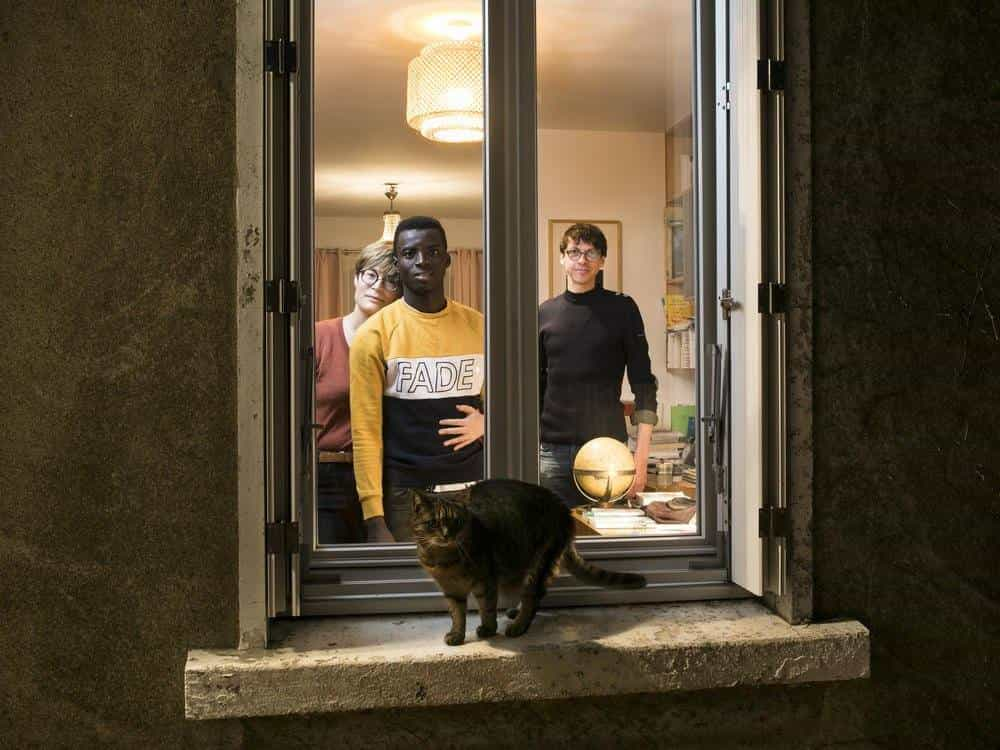

This account syndicates news from other media outlets.


Sophia Lösche, a 28-year-old German “refugees welcome” activist, was found dead yesterday around 3.20 pm at the Egino gas station in the community of Asparrena in Álava, Spain, Bild reports.
For a week, nothing was known about her whereabouts since she boarded a truck with Moroccan license plates in Schkeuditz, East Germany. She hitchhiked to her hometown Bamberg, about 260 kilometers south.
A Civil Guard traffic control stopped the truck on Tuesday on a road near the Spanish city of Bailén in Jaén. The driver wanted to go to the Strait of Gibraltar, take a ferry and get off in Morocco, where he wanted to protect himself from European justice.
On Wednesday he was transferred to the Central Examining Court No. 6 of the Audiencia Nacional. His confession made it possible to locate the body of the young woman yesterday, her case had been reported in the German media after her family reported her disappearance 24 hours after her death.
She had worked with an NGO on the Greek island of Lesbos, where she helped these so-called refugees. Sources consulted by the media emphasized that the body showed “clear symptoms of violence”. The perpetrator had obviously intended to rape her.

The autopsy, which will probably be performed today in the Department of Forensic Pathology in Vitoria, will determine the cause of death. Also the approximate time at which it happened, so that we can determine whether it was in Germany, France or the Basque Country. This will clarify which court will handle the case.
Don’t Miss: German “Refugees Welcome” Activist Admits She Was Completely Wrong About Mass Migration